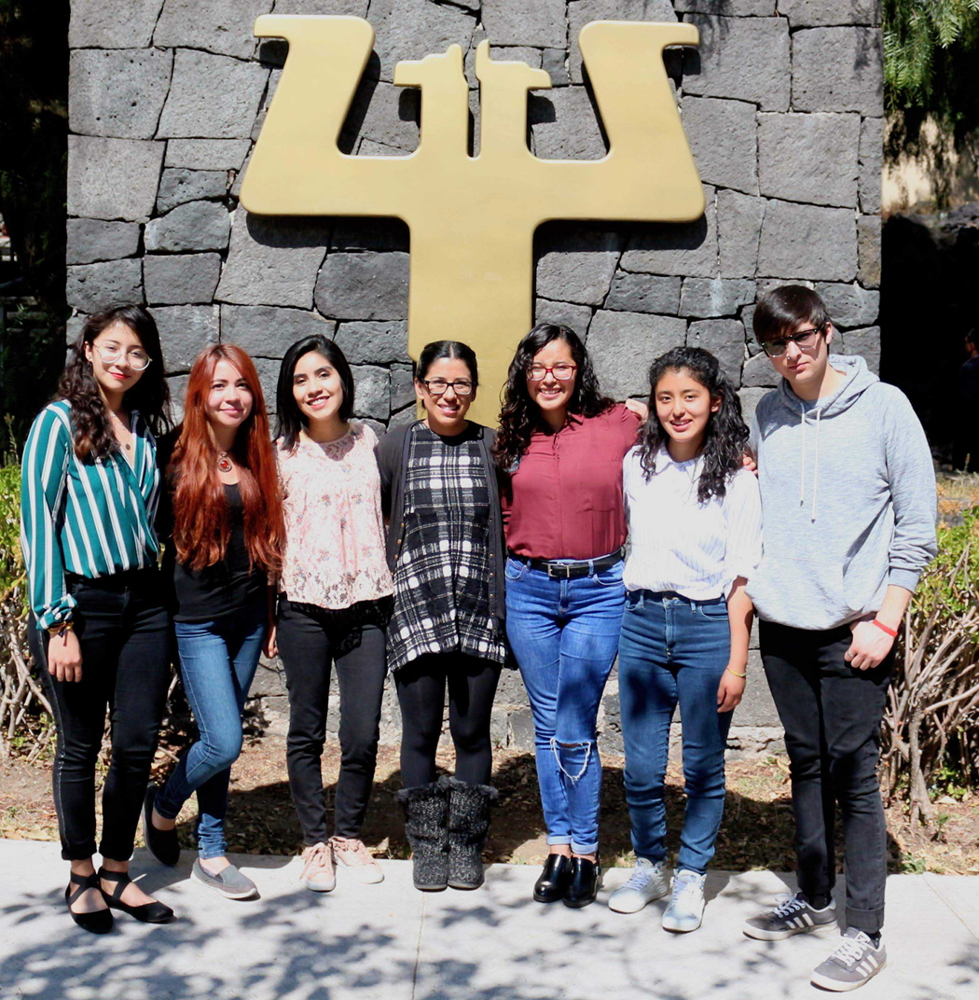

Somos un grupo de trabajo en la facultad de psicología de la UNAM en Ciudad Universitaria que estamos uniendo esfuerzo y conocimiento para contestar preguntas de investigación relacionadas a neurocognición social. Este esfuerzo involucra el uso de técnicas conductuales y de neuroimagen. 
La investigación en el Laboratorio de Neurocognición Social abarca líneas de investigación asociadas a los procesos cognitivos y neurobiológicos durante las interacciones sociales en humanos:
- ¿Cuáles son los mecanismos neurobiológicos de teoría de la mente y empatía?
- ¿Qué mecanismos neuronales nos permiten identificar estímulos sociales específicos de nuestra cultura comparado con los de otras culturas?
- ¿Cómo el cerebro procesa información contextual durante las interacciones sociales?
- ¿Cuáles son los cambios neurobiológicos asociados a la reproducción, desde el embarazo, parto, lactancia y crianza?
Recabar información sobre estas grandes preguntas en psicología nos ayudará a conocer cómo el cerebro procesa información social en diferentes condiciones o contextos sociales, así como descifrar sus alteraciones en poblaciones clínicas (e.g. autismo, alexitimia, esquizofrenia).
Nuestras principales actividades como equipo de trabajo abarcan:
- Construcción de tareas conductuales y paradigmas experimentales en estudios de neuroimagen (imagen por resonancia magnética funcional [IRMf]) para el estudios de procesos cognitivos asociados a la neurocognición social,
- Adquisición y análisis de datos en estudios consductuales y de IRMf,
- Discusión e interpretación de los hallazgos experimentales así como escritura de artículos especializados y de divulgación.